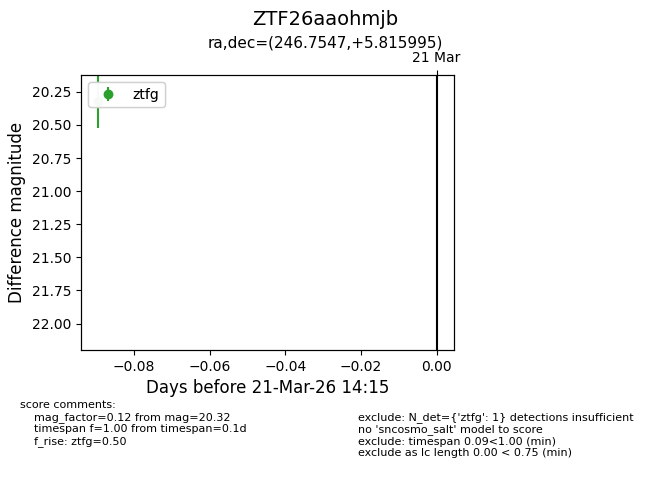
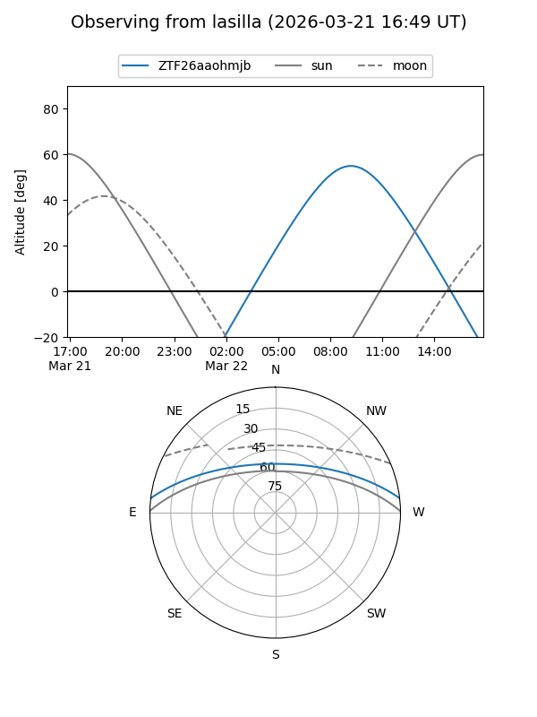
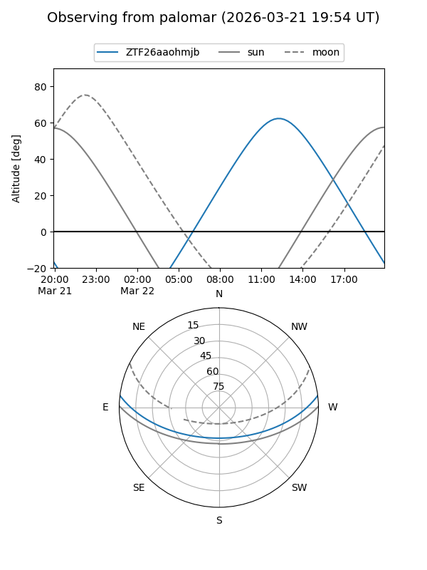

ZTF26aaohmjb
Target ZTF26aaohmjb at 2026-03-21 14:17
Aliases and brokers:
FINK: link
Lasair: link
ALeRCE: link
alt names
ZTF26aaohmjb (ztf,fink_ztf)
Coordinates:
equatorial (ra, dec) = 246.7547,+5.81600
equatorial (HMS+DMS) = 16:27:01.13,+05:48:57.58
galactic (l, b) = (20.5045,+34.60704)
Flags:
Photometry:
last ztfg=20.32
1 ztfg detections
Lightcurve

Visibility


Additional plots